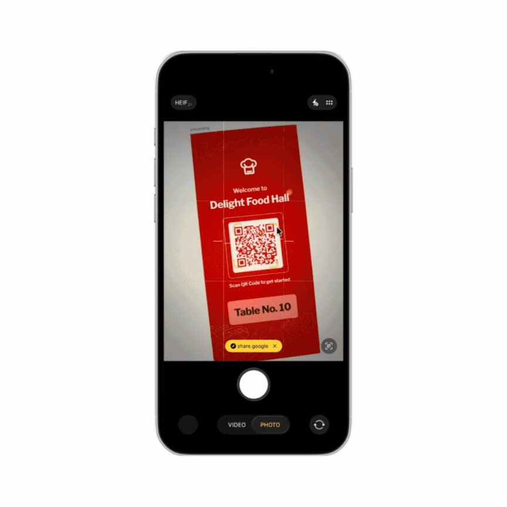
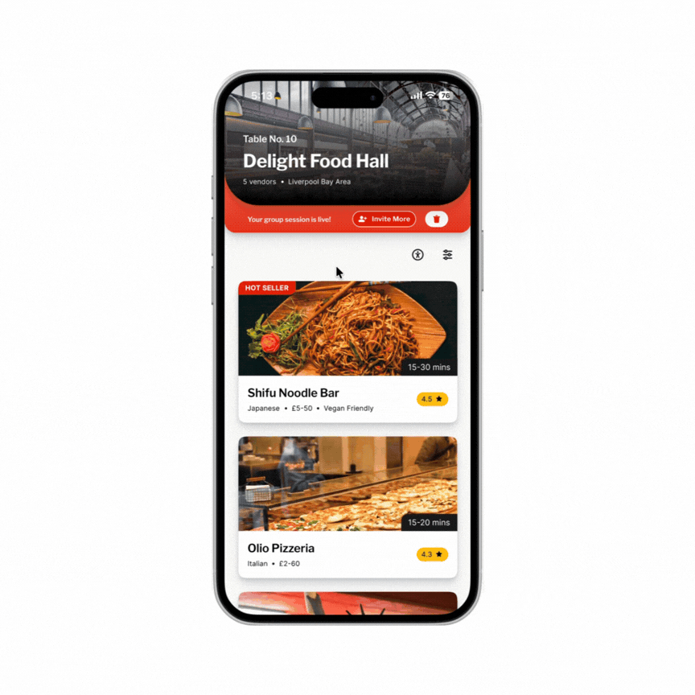
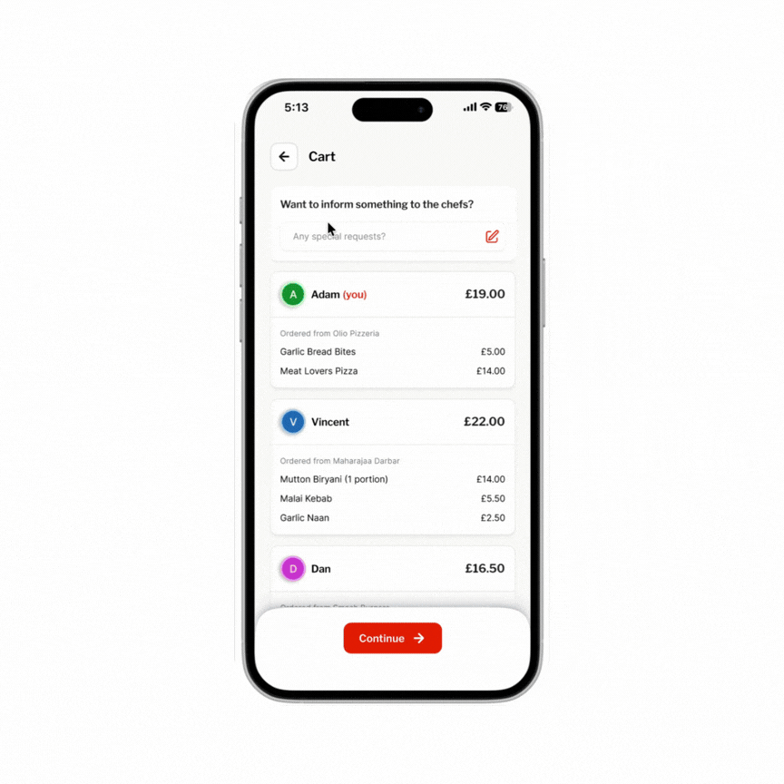
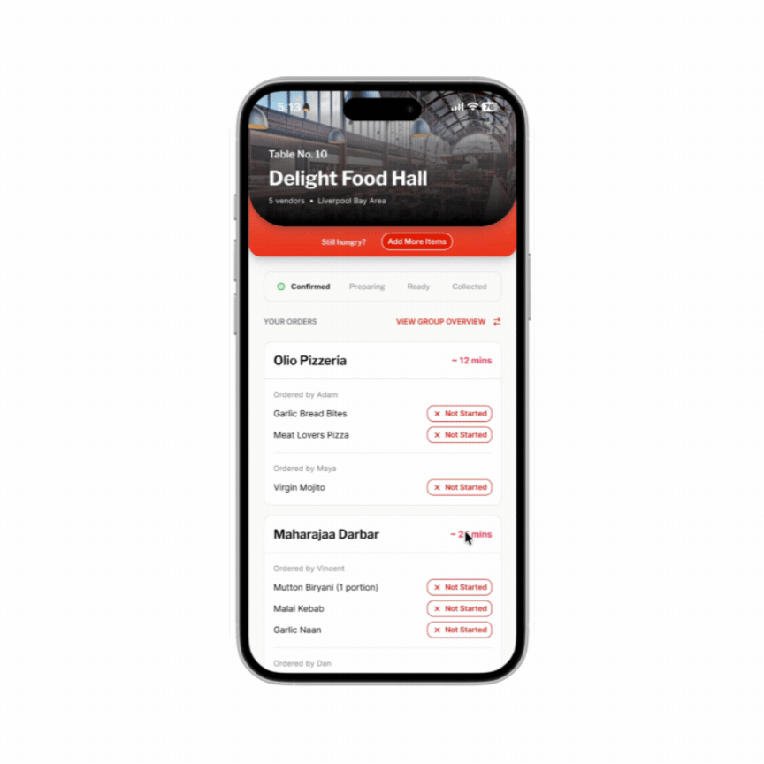

01
Group dining behaviour
Sequential ordering sets an unspoken spending ceiling — whoever orders first anchors what feels acceptable for everyone after them.
Case study · 9 min read
Group ordering at UK food halls, where every person pays for exactly what they ordered.
The brief
Culinarr is a prototype for group ordering at UK food halls. Scan a QR code, browse every vendor's menu in one place, and each person pays for exactly what they ordered. No app download, no account, no end-of-night bill chaos.
Problem
Anyone who's ordered food for a group at a food hall knows the drill: four separate queues, dishes arriving in waves twenty minutes apart, and a bill at the end that gets split evenly eight ways — even though two people didn't drink and one just had a salad.
I audited nine UK food halls to see what already existed. Four had QR ordering, and those covered one vendor or drinks only, never the whole hall. The other five were counter service with no QR at all. I couldn't find anything built for ordering across a whole hall as a group.
"A QR-triggered web app where one person opens a session, everyone joins on their own phone, browses across every vendor, and settles their own share. No app download, no account, no post-dinner payment chasing."
— The product I set out to designThe behavioural research was more consistent than I expected. Splitting a bill equally tends to inflate spending by around 37%, 78% of diners say they'd rather pay only for what they ordered, and people are 3.2× more likely to overpay than risk looking awkward about money in front of a group. Asking for a fairer split costs more, socially, than overpaying does.
Sources: Gneezy, Haruvy & Yafe (2004); Splitty (2025) survey; my own nine-hall audit.
Existing tools get close but don't get there. In my comparison, me&u only partly supports spontaneous group sessions and filters dietary needs per vendor, and Uber Eats assumes one restaurant and one host who pays for everyone.
My starting hypothesis: if everyone could browse, order and pay for their own items from their own phone, with no app and no account, both the coordination friction and the payment friction would drop.
Research
To get past my own assumptions, I combined behavioural-economics literature on group spending with a competitive audit of nine food halls and a read-through of reviews across TripAdvisor, Reddit, Google and Facebook. I also interviewed four people. Three findings shaped what followed.
Sequential ordering sets an unspoken spending ceiling — whoever orders first anchors what feels acceptable for everyone after them.

72% of people find talking about money at the table harder than religion or politics. Fairness is wanted — the social script for it just doesn't exist yet.
What it came down to: a fair way to split a bill rarely gets suggested out loud, so the product needed to make that conversation unnecessary.
Direction
How might we
help groups coordinate orders, pay fairly, and enjoy the meal — without an app, an account, or one designated payer?
That changed the order of work: coordination first, payment second. Two decisions follow from it.
Users
I used two personas, built from that research and the four interviews: Sam, a host who just wants everyone fed without becoming the evening's logistics manager, and Zara, a student with dietary restrictions who'd rather quietly filter a menu than ask a server to double-check every dish.
“I just want everyone to have a good time without me spending the whole night being the logistics manager.”
A host who just wants everyone fed without becoming the evening’s logistics manager.
“I have dietary restrictions but I hate making a fuss — I just want to know what I can eat before I get to the counter.”
A student with dietary restrictions who’d rather quietly filter a menu than ask a server to double-check every dish.
Structure
Journey mapping, built from the research, is what reframed the project for me. I went in assuming payment was the painful part. The emotional low point was ordering: a host guessing what six people want over a WhatsApp thread, four have replied, two haven't, and everyone's getting hungrier.

Solution
Two decisions shaped the solution.

Design system
I tried a neobrutalist direction early on — bold outlines, high contrast — and liked it for about a day. It made dietary tags harder to scan and read as trendy rather than trustworthy for something handling real payments. I dropped it for the calmer system above.


The hardest visual problem was making a burger menu, a sushi menu and a cocktail menu feel like one coherent product, not a generic third-party aggregator. I used one card component everywhere. Variety comes from each vendor's photography and colour header, and the structure never changes. The trade-off is that vendors get less control over their own layout.

One tap after scanning generates a 4-digit code, a QR and a link — whichever gets the group in fastest.

One menu across every vendor, with a cross-vendor dietary filter (text labels alongside icons) and a dyslexia-friendly font toggle.

Everyone defaults to their own items. A live “remaining table balance” shows what's settled. One failed payment is designed not to block anyone else's order, though I haven't tested that against a real failure.

Each item moves through Received → Preparing → Ready, per vendor, and the group is notified when everything is ready. I didn't find per-vendor tracking in the apps and halls I reviewed.
Testing
"I spent 40 seconds looking for the filter before I asked. Once I found it I used it immediately — it's just not where I expected it."
— P3, during testingThe filter icon was being read as general settings, not dietary filtering. The fix wasn't a better icon — it was removing the need to guess at all.


Testing also exposed a gap in the split. P3 asked what happens if one person wants to pay individually while the other three split the rest, which my original design didn't cover. I changed it so the split mode can be switched even after someone has paid, and the remaining amount adjusts automatically.
SUS came out at 79.5 (“Good”) against a target of 75. With five participants I'd treat that as directional. The colour-contrast checks I ran all passed WCAG AA. The bigger limit is who was in the room: all five were university peers with high digital literacy. Older diners, people less comfortable with new interfaces, and anyone in a genuinely loud food hall weren't tested.
Prototype
The final design, as a working prototype. Pick a flow to read what to try, then use the prototype below. The same file is linked at the end of this page.
Scan the QR on the table tent, enter your name and start or join a group session. No account, no download.
Open a vendor menu, filter by diet and add dishes to the shared cart. Everyone at the table sees it grow.
Pay for your own items by default, or switch to an equal split if the table prefers.
Follow each vendor’s order from Received to Preparing to Ready.
Switch the split mode even after someone has paid. The remaining amount adjusts automatically.
The Figma prototype opens in its own tab.
Open the working prototype (opens in new tab)Validation
Everyone completed creating or joining a session and paying. Four of five completed browsing and ordering, and tracking an order.
SUS came out at 79.5 against a target of 75, and average task completion was 84% against 80%.
The dietary filter fell short at 60%. After the labelled filter, confusion dropped by roughly 5%.
All five were university peers with high digital literacy. Older diners, people less comfortable with new interfaces, and anyone in a loud food hall weren’t tested.
This was my first time running a structured usability study start to finish: recruiting, writing tasks, scoring SUS, coding interview notes. Five participants felt small the whole way through, until the same patterns kept showing up independently across sessions. If I ran it again I'd recruit six to eight before treating a finding like the dietary-filter failure as more than a strong hint.
Every test so far has happened in a quiet room with cooperative participants. A real food hall is loud, crowded, and nobody's full attention — that's the environment that will actually break things.
The "Buy a Feature" exercise that shaped scope had three participants. Joining a session scored 0/3 even though I'd marked it a Must Have, so I made the join flow much more minimal. With three people I can't tell whether that was signal or noise. Six to eight would make it defensible.
If you'd like to see the full flow, here's the working prototype (opens in new tab), or feel free to reach out directly — happy to walk through the trade-offs and the parts that didn't work.
A three-layer service model that proactively reaches bereaved people with the right entitlements, at the right time.

Connecting Change Analysis and Clash Analysis into one workflow for construction teams.

Open to roles in product design, service design, and UX — consumer, hospitality, and complex multi-user products.
Text
Display